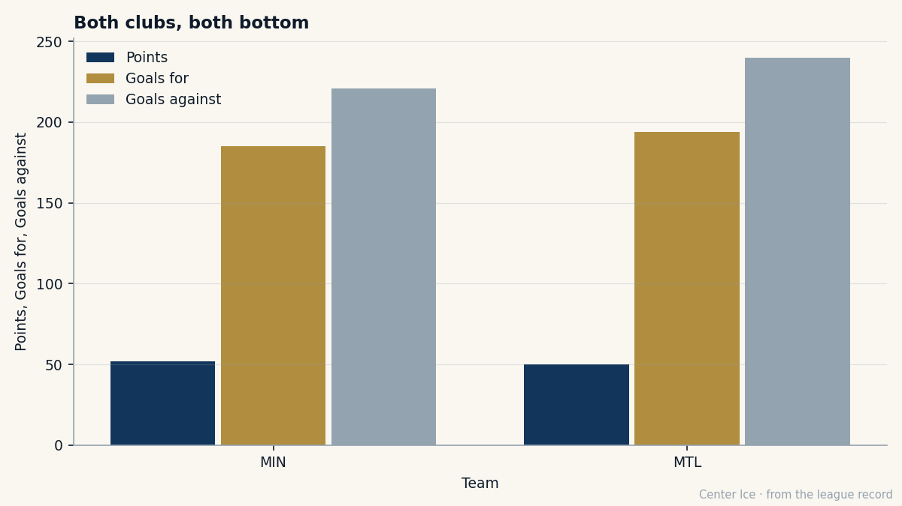

He Held Montreal Together Through the Worst. Now He Holds This Room.
Saku Koivu, traded by the club he captained for six years, plays at Montreal on Saturday. Both teams have 16 wins.
 Carol BinghamFeatures writer · Rinkside
Carol BinghamFeatures writer · Rinkside Saku Koivu84 will skate onto the ice in Montreal on 2005-02-27 in a
Saku Koivu84 will skate onto the ice in Montreal on 2005-02-27 in a  Minnesota Wild sweater. He wore the C in that building for six years. He sat out nearly an entire season with cancer and came back to eight minutes of standing. He is 30 now, on $6.84M with three years left, and his new club has 16 wins in 60 games.
Minnesota Wild sweater. He wore the C in that building for six years. He sat out nearly an entire season with cancer and came back to eight minutes of standing. He is 30 now, on $6.84M with three years left, and his new club has 16 wins in 60 games.
The trade that sent him went through on 2005-02-16.  Montreal Canadiens received
Montreal Canadiens received  Michael Nylander78,
Michael Nylander78,  Dwayne Roloson84, and Kyle Wanvig71. Minnesota Wild received Koivu, Donald Audette, and Patrick Traverse69. A captain for a goaltender, a center, and a prospect. The grades on the sheet say it was roughly even: Roloson sits 82 on the Book, Koivu 83. That does not count the C.
Dwayne Roloson84, and Kyle Wanvig71. Minnesota Wild received Koivu, Donald Audette, and Patrick Traverse69. A captain for a goaltender, a center, and a prospect. The grades on the sheet say it was roughly even: Roloson sits 82 on the Book, Koivu 83. That does not count the C.
| Player | Was with | Now with | Overall |
|---|---|---|---|
| Saku Koivu | MTL | MIN | 83 |
| Donald Audette | MTL | MIN | 73 |
| Patrick Traverse | MTL | MIN | 69 |
| Michael Nylander | MIN | MTL | 74 |
| Dwayne Roloson | MIN | MTL | 82 |
| Kyle Wanvig | MIN | MTL | 69 |
Koivu arrived in Minnesota Wild on 2005-02-19. Four days later he has played a handful of games for a club that has 52 points in 60 games, scores 3.08 goals a night, and lets in 3.68. Montreal Canadiens has 50 points in 63 games, 3.08 goals for, 3.81 against. The two clubs are two points apart in the standings, separated by three games of hockey. Neither has made the playoffs since the record opened its pages on them.

The captain who did not quit
The background sheet carries the rest. Koivu was drafted 21st overall by Montreal in 1993, out of TPS in Turku, Finland. He came to North America in 1995-96. He became the 27th captain of the Canadiens on September 30, 1999. In 2001 he was diagnosed with non-Hodgkin's lymphoma and missed nearly the entire 2001-02 season. He came back on April 9, 2002, in the team's 80th game, and the Molson Centre gave him eight minutes of standing ovation. He won the Bill Masterton for it.
He followed that with 71 points in 2002-03, then 103 in 2003-04, the highest season of his career. This year, before the trade, he had 71 points in 52 games for a team that could not win. He is the same player in a different sweater: 26 goals and 45 assists in 52 games, 21.8 minutes a night, morale 87. His speed grade is 92, his passing grade is 92. The Book says 83.
The room he walked into
Minnesota has no history anyone is still angry about.  Manny Fernandez90 is the best player on the roster at 87, then
Manny Fernandez90 is the best player on the roster at 87, then  Wes Walz82 at 82, then the defencemen. Koivu is the highest-rated skater in the room, one point above Walz. The payroll is $37.91M, among the lowest in the league. The profit is $38.26M. This is a club that spends almost nothing and makes money doing it, and they just traded a backup goaltender and two middling forwards for the man who held a city together while he was dying.
Wes Walz82 at 82, then the defencemen. Koivu is the highest-rated skater in the room, one point above Walz. The payroll is $37.91M, among the lowest in the league. The profit is $38.26M. This is a club that spends almost nothing and makes money doing it, and they just traded a backup goaltender and two middling forwards for the man who held a city together while he was dying.
Jason Hughes, the Minnesota GM, said on The Tunnel this week that the club is at 50 points, that they are listening to every call, and that the answer in the trade market is "both," in either direction. He did not name Koivu, and he did not need to.
What the Book never said about the C
Koivu's toughness grades are 50. His fighting grade is 50. His injury resistance is 50. The Book, which is the Bureau's current read on a man's game, has never called him hard to knock off the puck. It has called him fast, it has called him accurate, and it has called him a distributor. The 83 on the Book is the grade of a man who scores 71 points in 52 games on a team with 16 wins and cannot stay healthy.
The Development Index has him at 0 form, exactly where the Book expects him, neither rising nor falling. He was traded because his club had 50 points and $45.26M in payroll and a captain on $6.84M who would not score enough in the right games to make the difference between 50 and 80.
Four days
Montreal lost its captain in a three-for-three on a Wednesday. Minnesota gained a center who skates 21.8 minutes a night, has a passing grade of 92, and once played through cancer in front of twenty thousand people who refused to stop clapping. The two clubs meet on Saturday in the building where the ovation happened.
Koivu has 71 points in 52 games this season. He had 103 last year. He is 30 years old, three years and $6.84M from free agency, and he is going back to the only NHL city he has known, in a sweater that is not white.